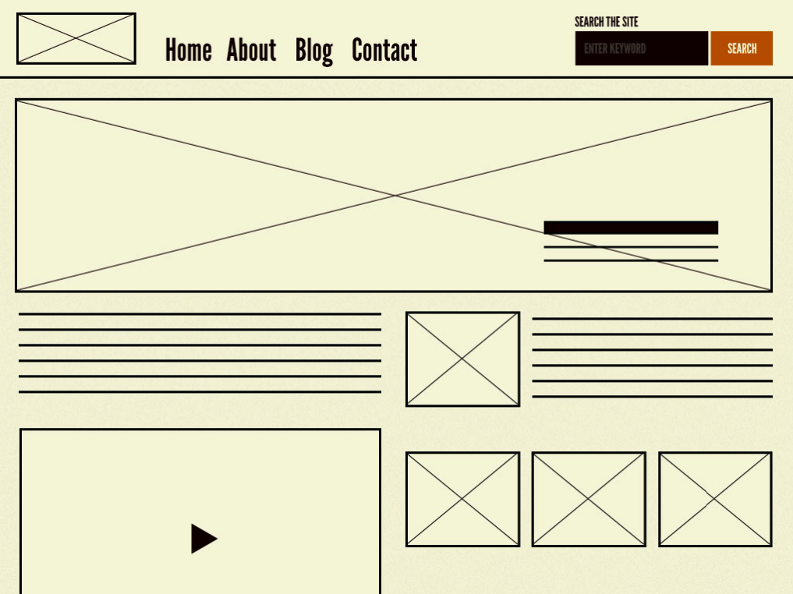
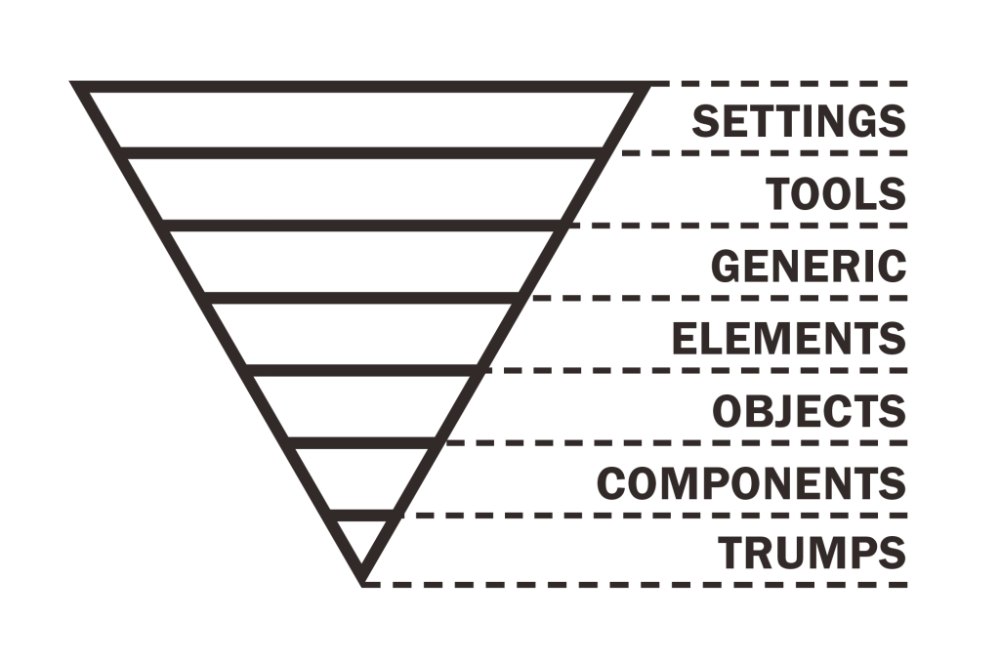

El sistema
Somos parte
de de un todo

El contexto
A salto de mata
Pérdida de recursos y energía
Problemas
del día a día
1
¿Para qué contratar a un front-end designer si existe Bootstrap?
2
El equipo no dispone del conocimiento del diseño
y hace lo que puede
3
Falta de arquitectura CSS
- Código espagueti
- Librerías externas con rutas diferentes
- ...
4
Duplicidades
Código propio o de terceros que
no se utiliza
5
Falta de coherencia
Productos inconsistentes entre ellos
6
Herencias de frameworks
7
Problemas con la especificidad
important!
Selectores infinitos
8
Mezcla de varias convenciones de nombrado
No solo me pasa a mi
9
No existe documentación
Ni guías de estilo ni pattern libraries
4 azules diferentes, botones de 12 medidas diferentes.
Necesitamos un sistema que arregle, ordene y documente todo esto
Design System
Ventajas
de crear un DS
Claridad
Eficiencia
Consistencia
Belleza
Atomic design
Esta analogía nos ayudará a comprender el Design System
Brad Frost
Volver a la química
Image by Brad Frost
Átomo
Image by Brad Frost
Molécula
Image by Brad Frost
Organismo
Image by Brad Frost
Plantillas
Image by Brad Frost
Páginas
Image by Brad Frost
Los red lines
han muerto

Image by Jina Bolton
Ya NO diseñamos páginas,
diseñamos sistemas
Diseñamos
tokens, componentes y ...
Design Tokens
Son la base
del sistema
Los Design Tokens básicamente son átomos del diseño visual compuestos por propiedad y valor.
/*---------------tokens---------------*/
--color-gallery: #EBEBEB;
--color-mercury: #e5e5e5;
--color-wildsand: #F5F5F5;
/*---------------sizes---------------*/
--small: 5px;
--medium: 10px;
--large: 20px;
--xlarge: 40px;
--xxlarge: 60px;
--none: 0;

Code by Gorka Lauzirika & Beñat Espiña
Se pueden tokenizar muchas propiedades
- Color
- Font-size
- Spacing
- Sizing
- ...
Ventajas
- Crea un producto consistente
- Añade una capa más de seguridad en la cascada si se cambia el valor de la variable.
- Favorece la templatización
- Favorece la mantenibilidad
- Las variables están aisladas del código y son fáciles de localizar y modificar
PostCSS/Sass/Less
ayudan a crear el sistema
Theo
A set of Gulp plugins for transforming and formatting Design Tokens
Theo JSON convierte:
- Sass
- Less
- Stylus
- JSON (IOS)
- XML (Android)
- Style guide
- Color swatches (Photoshop & Sketch)
"options and decisions aren’t buried in Sass files. Instead, they are centralized and propagated as tokens to any product, designer or developer adopting the system, in easy-to-use, predictable formats."
Diseño de componentes
La clave
Crear componentes reutilizables
Workflow
El diseño
Sketch
Artboards
Symbols
Reutiliza, combina, crea
Plugins desde github
Convenciones de nombrado
desde el diseño
El code
Elegir especificidad
Reglas
- No utilizar #identificadores para estilar
- No mezclar selectores
- Evitar el nesting
Evita selectores extra
Así no:
body #container .someclass ul li {....}
Así sí:
.someclass {...}
Gráfico de especificidad
Evitar los picos, y la tendencia general debería ser hacia una especificidad más alta al final de la hoja de estilo
Convenciones de nombrado
BEM
ITCSS
BEMIT
BEM
Block, Element, Modifier
/* Block component */
.btn {}
/* Element that depends upon the block */
.btn__price {}
/* Modifier that changes the style of the block */
.btn--orange {}
.btn--big {}
$9.99
Subscribe
Soluciona problemas

"These problems are solved by BEM methodology, a development approach allowing to achieve flexible and maintainable code."
Common approach for all technologies: HTML, CSS, JavaScript, docs, tests, etc.
Image by BEM doc.
Reutiliza
"Most projects use the same components. Code reuse significantly reduces price and time of development."
Image by BEM doc.
Gana
- Consistencia
- Escalabilidad
- Reutilización
- Productividad
- Trabajo en equipo
- Hacer más con menos
Los peros
HTML verboso
ITCSS
(Inverted Triangle CSS)

Es jerarquía basada en el grado de especificidad
De menor concreción a mayor, creando un triángulo invertido.
Arriba los elementos generales, en la última capa, los concretos, específicos.

BEMIT
Añade información de comportamiento
BEM:
.block__element--modifier {}
BEM w/ Namespaces & Responsive Suffixes:
.namespace-block__element--modifier@suffix {}
Namespaces
Object
.
o-object-name[
Component
.
c-component-name[
Utility
.
u-utility-name {}
Theme
.
t-theme-name {}
Scope
.
s-scope-name {}
State
.
[is|has]-state {}
Hack
.
_
Javascript
.
js-component-name {}
Quality Assurance
.
qa-node-name {}
Responsive Suffixes
Breakpoints
.o-object-name@sm {}
.o-object-name@md {}
.o-object-name@lg {}
Tenemos ya todo bien diseñado, tokens escritos,
la arquitectura y nomenclatura decidida,
los componentes definidos
Ahora toca documentarlo
Pattern libraries
Documentación sobre las decisiones de diseño
- Colores
- Tipografías
- Tamaños
- Componentes
- Convención de nombrado
- HTML y CSS (postCSS/Sass)
- Layouts
- Accesibilidad
- Animaciones
- Multimedia
- ...
- TODO
Es más que un style guide
Para qué
Ganar consistencia
Conocimiento del equipo
Fomentar la reutilización del código
Bootstrap is evil?
DIY
¿Por qué?
¿Por qué dejar que alguien tome decisiones por nosotros?
Crear un Pattern Library propio
Trucos
- Diseño claro, limpio, neutro para no interferir con el contenido
- Buscar el sistema más sencillo para que sea mantenible
- Intentar automatizar lo máximo posible
- Repositorio aparte. Trabajarlo como submódulo
- Agnósticos a los proyectos
- Ir creando tokens y templatizar paso a paso
- Trabajar en fases
nakDS
- Jekyll. Sistema sencillo de mantener
- Gulp para gestionar el CSS y permitir automatización
- Core + custom
- Templatizado
- Trabajado con submódulos en git